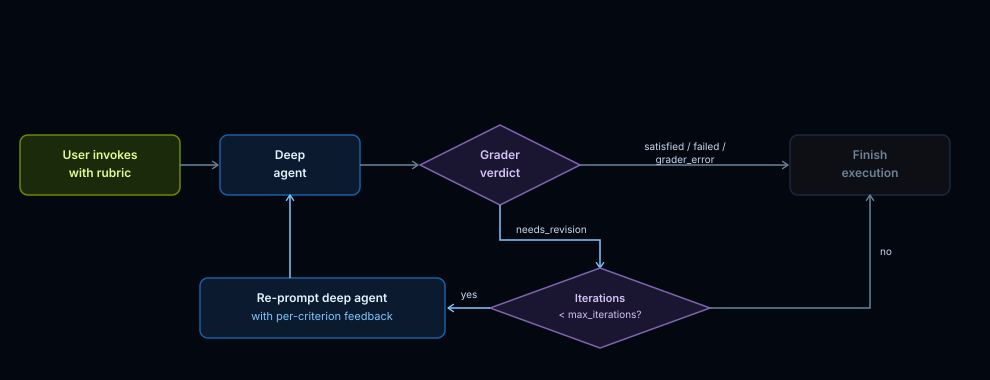

grader 子 agent 让重试带着具体反馈发生。
每轮主 agent 产出后，独立 grader 读取完整 transcript 和 rubric。若有 criterion 未通过，反馈被注入会话，agent 针对具体失败项再跑一轮。
Why：复杂 agent 往往方向正确却没有真正达标，开发者还要手动检查、重跑和诊断。What：RubricMiddleware 把“完成”的定义变成 grader 子 agent 可执行的 rubric，让 agent 在逐条反馈下继续修正。How：把 middleware 接到 Deep Agents，并在调用时传入 rubric；grader 可调用测试等工具取证，循环到通过、达到迭代上限或失败状态为止。
复杂 agent 往往方向正确却没有真正达标，开发者还要手动检查、重跑和诊断。
RubricMiddleware 把“完成”的定义变成 grader 子 agent 可执行的 rubric，让 agent 在逐条反馈下继续修正。
把 middleware 接到 Deep Agents，并在调用时传入 rubric；grader 可调用测试等工具取证，循环到通过、达到迭代上限或失败状态为止。
文章强调这类机制最适合有清晰验收条件的工作，比如测试通过、禁止模式不出现、报告章节完整。它不是让模型抽象判断“好不好”，而是把 done 拆成逐项 verdict。

每轮主 agent 产出后，独立 grader 读取完整 transcript 和 rubric。若有 criterion 未通过，反馈被注入会话，agent 针对具体失败项再跑一轮。
示例里 grader 可以调用 run_test_suite 验证代码行为；没有工具时才退回基于 transcript 的推理。文章展示首次实现看似正确但测试失败，第二轮根据反馈修正后通过。